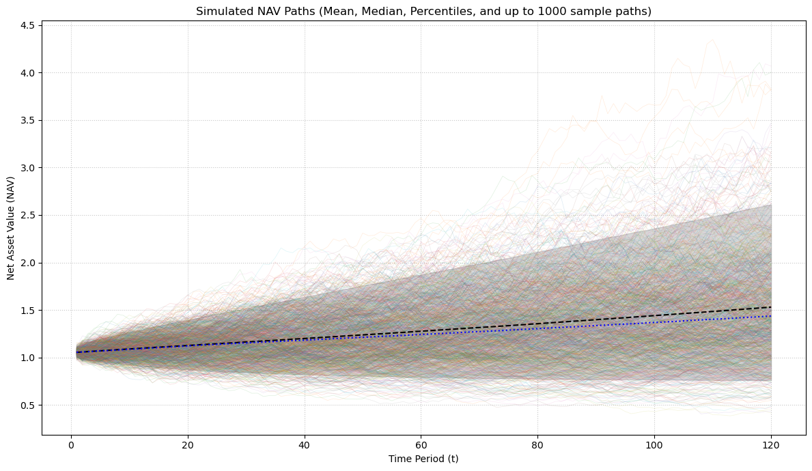

import numpy as np
import pandas as pd
from pydantic import BaseModel, Field, field_validator
from typing import Literal, Optional, Annotated, Union, Type
from dataclasses import dataclassLiquidity Simulation Prototype
quantitative-finance
liquidity-simulation
This is a demonstration of a liquidity simulation applied to a evergreen-style PE fund.
Model
1 · State Variables (per path)
| Symbol | Initial value | Description |
|---|---|---|
| \(C_t\) | \(C_0 = 0\) | Cash in operating account (should be 0 after each period) |
| \(B_t\) | \(B_0 = 0\) | Liquid buffer (T-bills / money-market) |
| \(I_t\) | \(I_0 = 1 - B_0\) | Illiquid assets |
| \(\mathit{NAV}_t\) | \(\mathit{NAV}_0 = 1\) | Net asset value before liquidity actions (\(=C_t + B_t + I_t\)) |
| \(R_t\) | \(R_0 = 0\) | Revolver balance |
| \(Q_t\) | \(Q_0 = 0\) | Redemption queue |
| \(\bar L_t\) | \(b\,\mathit{NAV}_{t-1}\) | Target liquid capital |
| \(\bar R_t\) | \(r_{\text{max}}\,\mathit{NAV}_{t-1}\) (or \(r_{\text{max}}\,\mathit{NAV}_0\)) | Revolver limit |
2 · Per-period random draws
(all expressed as a fraction of \(\mathit{NAV}_{t-1}\))
| Variable | Distribution | Meaning |
|---|---|---|
| \(s_t\) | \(\operatorname{LogNormal}(\mu_{\text{s}},\sigma_{\text{s}}^2)\) | Subscriptions |
| \(r_t\) | \(\operatorname{LogNormal}(\mu_{\text{r}},\sigma_{\text{r}}^2)\) | Redemption requests |
| \(d_t\) | \(\mathcal N(\mu_{\text{d}},\sigma_{\text{d}}^2)\) | Net deal cash-flow |
| \(r^{\text{perf}}_t\) | \(\operatorname{LogNormal}(\mu_{\text{ret}},\sigma_{\text{ret}}^2)\) | Illiquid return |
3 · Monthly workflow
3.1 Asset Performance & Interest Accrual
Illiquid assets invested last period earn interest at the stochastic rate, \(r^{\text{perf}}_t\),
\[ I^{\text{perf}}_t = I_{t-1}\left(1 + r^{\text{perf}}_t\right), \]
where
\[ r_t^{\text{perf}} \sim \operatorname{LogNormal}\left(\mu_{\text{ret}},\sigma_{\text{ret}}^2\right). \]
Liquid assets in the liquidity sleeve earn the risk-free rate,
\[ B_t^{perf} = B_{t-1} \left(1 + r_f\right). \]
Revolver inteerest expense accrues on the balance of the revolver \[ R_t^{\text{post}} = R_{t-1} \left(1 + r_{\text{rev}}\right). \]
3.2 Cash before redemptions
Our initial cash balance grows from 0 the stochastic subscription rate, \(s_t\), and deal cash flow rate, \(d_t\), \[ C^{\text{inflow}}_t = C_{t-1} + \left(s_t + d_t \right) \mathit{NAV}_{t-1}, \] where \[ s_t \sim \operatorname{LogNormal}\left(\mu_{\text{s}},\sigma_{\text{s}}^2\right), \] and \[ d_t \sim \mathcal{N}\left(\mu_{\text{d}},\sigma_{\text{d}}^2\right). \]
3.3 Queue-based gate
The queue grows by the stochastic redemption rate, \(r_t\), \[ Q^{\text{in}}_t = Q_{t-1} + r_t \cdot \mathit{NAV}_{t-1}, \]
where
\[ r_t \sim \operatorname{LogNormal}\left(\mu_{\text{r}},\sigma_{\text{r}}^2\right). \]
The queue be paid out subject to the gating mechanism and solvency,
\[ P_t^{\text{target}} = \min\left(Q^{\text{in}}_t, g_{\text{max}} \mathit{NAV}_{t-1}\right). \]
3.4 Cash Flow Waterfall
3.4.1 Surplus check
If there is sufficient cash flow (surplus) to cover gated redemption amount, \[ C_t^{\text{inflow}} \ge P_t, \]
then proceed to to Section 3.4.2 Surplus Waterfall and define net cash leftover after redemptions as
\[ C_t^{\text{net}} \equiv C_t^{\text{inflow}} - P_t^{\text{target}}. \]
Else, if there is not sufficient cash flow proceed to Section 3.4.3 Shortfall Waterfall, and define the shortfall amount by
\[ S^{\text{short}}_t \equiv P_t - C^{\text{inflow}}. \]
3.4.2 Surplus Waterfall \(\left(C^{\text{inflow}}_t \geq P_t\right)\)
Tranche 1: Paydown Revolver Debt
With the excess cash first payoff revolver debt. The full balance is paid if possible,
\[ R^{\text{pay}}_t = \min(C^{\text{net}}_t, R^{\text{post}}_t) \]
and the revolver balance (including interest) is adjusted,
\[ R_t = R^{\text{post}}_t - R^{\text{pay}}_t, \]
as well as our cash balance
\[ C_t^{\text{remaining}} = C_t^{\text{net}} - R_t^{\text{pay}} \]
Tranche 2: Top-off Liquidity Sleeve
Next we make sure the liquidity sleeve buffer is topped off until the target buffer level,
\[ B_t = B^{\text{perf}} + \Delta B_t, \]
where
\[ \Delta B_t = \min \left(C_t^{\text{remaining}}, B_t^{\text{deficit}} \right), \]
where the deficit is computed as
\[ B^{\text{deficit}}_t \equiv \max\left(0, \bar{L}_t - B^{\text{perf}}_t\right), \]
and \(\bar{L}_t\) is the target liquidity sleeve buffer,
\[ \bar{L}_t \equiv b \cdot \mathit{NAV}_{t-1}. \]
Then we adjust for the balance of the revolver,
\[ B_t = B_t^{perf} + \Delta B_t \]
and calculate the cash surplus remaining,
\[ C_t^{\text{final}} = C_t^{\text{remaining}} - \Delta B_t. \]
Tranche 3: Invest in New Deals
Finally, any surplus left over gets reinvested in new deals,
\[ I_t = I_t^{\text{perf}} + C_t^{\text{final}}, \]
we should have no cash remaining,
\[ C_t = 0, \]
and the amount paid out to the queue is
\[ P_t = P_t^{\text{target}}. \]
3.4.3 Shortfall Waterfall \(\left(C^{\text{inflow}}_t < P_t\right)\)
Recall we’ve previously defined the amount of the shortfall as
\[ S_t^{\text{short}} = P_t^{\text{target}} - C_t^{\text{inflow}}. \]
Tranche 1: Draw From Revolver
First use the revolving credit line to to paydown the shortfall. The available balance is
\[ R^{\text{avail}}_t = \bar{R}_t - R^{\text{post}}_t, \]
where, \(\bar{R}_t\), is the revolving credit limit defined as
\[ \bar{R}_t \equiv r_{\text{max}} \cdot \mathit{NAV}_t. \]
The new revolver balance is then
\[ R_t = R_t^{\text{post}} + \Delta R_t, \]
where the drawn amount is computed as
\[ \Delta R_t \equiv \min\left(S^{\text{short}}_t, R^{\text{avail}}_t\right). \]
The amount of shortfall remaining is, \(S_t^{\text{remain}}\) is computed as
\[ S_t^{\text{remain}} \equiv S_t^{\text{short}} - R_t^{\text{draw}}. \]
Tranche 2: Draw from Liquidity Sleeve if Needed
If the credit limit is hit, then we can draw from our liquidity sleeve,
\[ \Delta B_t = \min\left(S_t^{remain}, B_t^{perf}\right). \]
The remaining shortfall is then updated to
\[ S_t^{\text{remain}} = S_t^{\text{remain}} - \Delta B_t. \]
Tranche 3: Fire Sale \(\left(S_t^{\text{remain}} > 0 \right)\)
The gross amount needed to be liquidated is computed as
\[ \Delta I_t \equiv \min\left(\frac{S_t^{\text{final}}}{1-h}, I_t^{perf}\right), \]
which results in net proceeds computed as
\[ \Delta S_t \equiv \left(1 - h \right) \cdot \Delta I_t. \]
The proceeds then reduce the shortfall to
\[ S_t^{\text{final}} = S_t^{\text{remain}} - \Delta S_t, \]
and the total amount we are able to pay the queue is
\[ P_t = P_t^{\text{target}} - S_t^{\text{final}}. \]
Final Balance After Shortfall
Lastly we update out balance of illiquid assets,
\[ I_t = I_t^{\text{perf}} - \Delta I_t, \]
the liquidity sleeve,
\[ B_t = B_t^{perf} - \Delta B_t, \]
and our operational cash should be zero,
\[. C_t = 0. \]
3.5 Final Queue Update
We then payout to the queue,
\[ Q_t = Q^{\text{in}}_t - P_t. \]
3.6 Close the Period
The we compute the net asset value of the fund at the end of the period as
\[ \mathit{NAV}_t = C_t + B_t + I_t - R_t = B_t + I_t - R_t. \]
4 · Recorded outputs
- \(\mathit{NAV}_t\)
- \(C_t\)
- \(B_t\)
- \(I_t\)
- \(R_t\)
- \(Q_t\)
- \(P_t\)
- \(h \cdot \Delta I_t\) (fire-sale NAV hit)
- \(\Delta R_t\) (Revolver Draw)
- \(\Delta B_t\) (Liquidity Sleeve Draws / Payups)
Code
0. Setup
1. Model Parameters Class
class ModelParams(BaseModel):
# NoteL all parameters are in % of \mathit{NAV}_t
# Flow distribution parameters - Drives model dynamics
mu_s: float = 0.02 # Mean of log-subscription rate
sigma_s: Annotated[float, Field(gt = 0)] = 0.04 # Std.dev of log-subscription rate
mu_r: float = 0.02 # Mean of log-redemption requests
sigma_r: Annotated[float, Field(gt = 0)] = 0.02 # Std. Dev. of log-redepmtion requests
mu_d: float = 0.01 # Mean of net deal cash-flow
sigma_d: Annotated[float, Field(gt = 0)] = 0.02 # Std. Dev. of net deal cash-flow
mu_ret: float = 0.0 # Mean of log-illiquid-rets
sigma_ret: Annotated[float, Field(gt = 0)] = 0.04 # Std. Dev. of log-illiquid-rets
# Policy parameters
b: Annotated[float, Field(gte = 0, lte = 1)] = 0.05 # Target liquidity buffer (%\mathit{NAV}_t)
r_max: Annotated[float, Field(gte = 0, lte = 1)] = 0.15 # Revolver limit (%\mathit{NAV}_t)
g_max: Annotated[float, Field(gte = 0, lte = 1)] = 0.05 # Liquidity-gate (%\mathit{NAV}_t)
h: Annotated[float, Field(gte = 0, lte = 1)] = 0.1 # Fire-sale haircut
r_rev: Annotated[float, Field(gte = 0)] = 0.035 # Monthly interest rate on revolver
r_f: float = 0.02 # risk-free rate
# Add method to convert parameters to numpy array of a certain type
def as_numpy_arrays(self, dtype = np.float64):
"""Converts parameters to numpy arrays with specific precision"""
return {
'flow_means': np.array([self.mu_s, self.mu_r, self.mu_d, self.mu_ret]),
'flow_stds': np.array([self.sigma_s, self.sigma_r, self.sigma_d, self.sigma_ret]),
'policy_params': np.array([self.b, self.r_max, self.g_max, self.h, self.r_rev, self.r_f])
}
# Set model options
model_config = {
"frozen": True, # Makes object immutable
"validate_default": True, # Validates default values as well
"validate_assignment": True, # Validate on assignment
"extra": "forbid", # Cannot create new fields on the fly
"use_enum_values": True, # Returns 'float64' instead of DType.Float64
"str_strip_whitespace": True # Strips whitespace from strings
}2. Object Class for Simulation Parameters
class SimParams(BaseModel):
# Simulaiton parameters
n_paths: Annotated[int, Field(gt = 0)] = 10_000 # Number of simulations
horizon: Annotated[int, Field(gt = 0)] = 120 # Length of each simulation
seed: Optional[int] = 3252513 # Random seed
float_dtype: Union[Type[np.float64], Type[np.float32]] = np.float64
store_detailed_paths: bool = False
model_config = {
"frozen": True,
"validate_default": True,
"validate_assignment": True,
"extra": "forbid",
# "use_enum_values": True, # Not directly relevant for float_dtype now
"str_strip_whitespace": True,
"arbitrary_types_allowed": True # ADD THIS to allow np.dtype as a field type
}
3. Results Container
@dataclass(frozen = True, slots = True)
class SimulationResults:
panel: pd.DataFrame
metrics: dict[str, float]
4. Monte Carlo Engine
@dataclass(slots = True)
class MonteCarloEngine:
model: 'ModelParams' # ModelParams object
sim: 'SimParams' # SimParams object
rng: np.random.Generator = None # Instance of RNG generator
def __post_init__(self) -> None:
if self.rng is None:
self.rng = np.random.default_rng(self.sim.seed)
def simulate(self) -> "SimulationResults":
#--------- Preparation -------------------------------------------------------------
# unpack sim parameters
n_paths, T, flt_dtype = self.sim.n_paths, self.sim.horizon, self.sim.float_dtype
store_detailed_paths = self.sim.store_detailed_paths
# Initalize starting NAV
nav = np.ones(n_paths, dtype = flt_dtype)
# Pre-allocate arrays for tracking key metrics across simulations
max_rev = np.zeros(n_paths, dtype = flt_dtype) # Max revolver utilization per path
max_queue = np.zeros(n_paths, dtype = flt_dtype) # Max redemption queue per path
max_drawdown = np.zeros(n_paths, dtype = flt_dtype) # Maximum NAV drawdown from peak
peak_nav = nav.copy() # Running peak NAV
total_fire_sale_losses = np.zeros(n_paths, dtype = flt_dtype) # Cumulative fire sale haircuts
liquidity_buffer_breaches = np.zeros(n_paths, dtype = int) # Times buffer went below target
revolver_usage_periods = np.zeros(n_paths, dtype = int) # Periods with revolver outstanding
consecutive_gate_periods = np.zeros(n_paths, dtype = int) # Max consecutive gating periods
current_gate_streak = np.zeros(n_paths, dtype = int) # Current consecutive gates
perm_insolvent = np.zeros(n_paths, dtype=bool) # Paths that are insolvent
insolvent_time = np.zeros(n_paths, dtype = int) # Time of first insolvency
ever_fire_sale = np.zeros(n_paths, dtype=bool) # Paths that have ever had a fire sale
active_paths_mask = np.ones(n_paths, dtype=bool) # Paths that are still active
# Storage for time-series data
path_data_collectors = {}
if store_detailed_paths:
vars_to_store_for_panel = [
'NAV', 'C', 'B', 'I', 'R', 'Q', 'P',
'FireSaleHit', 'RevolverDraw', 'LiquidityDraw',
'Gated', 'Drawdown', 'BufferRatio', 'IlliquidRatio'
]
# Each will store a list of (n_paths,) arrays
for var_name in vars_to_store_for_panel:
path_data_collectors[var_name] = []
p = self.model # Cache model params for fast-access
# Pre-generate all random numbers
s_all = self.rng.lognormal(p.mu_s, p.sigma_s, (T, n_paths)).astype(flt_dtype)
r_all = self.rng.lognormal(p.mu_r, p.sigma_r, (T, n_paths)).astype(flt_dtype)
d_all = self.rng.normal(p.mu_d, p.sigma_d, (T, n_paths)).astype(flt_dtype)
ret_all = self.rng.lognormal(p.mu_ret, p.sigma_ret, (T, n_paths)).astype(flt_dtype)
#--------- Main Simulation Loop ----------------------------------------------------
# Initalize state variables for all paths
C = np.zeros(n_paths, dtype = flt_dtype) # Cash balance
B = 0.05 * np.ones(n_paths, dtype = flt_dtype) # Liquidity Buffer
I = nav.copy() # Illiquid assets
R = np.zeros(n_paths, dtype = flt_dtype) # Revolver balance
Q = np.zeros(n_paths, dtype = flt_dtype) # Redemption Queue Size
# Simulate each time period
for t in range(1, T + 1):
#-------- Extract Shocks -------------------------------------------------------
s_shocks = s_all[t-1, :] # s_t
r_shocks = r_all[t-1, :] # r_t
d_shocks = d_all[t-1, :] # d_t
ret_shocks = ret_all[t-1, :] # ret_t^{perf}
# Set shocks to zero for inactive paths
s = np.where(active_paths_mask, s_shocks, 0.0)
r = np.where(active_paths_mask, r_shocks, 0.0)
d = np.where(active_paths_mask, d_shocks, 0.0)
ret = np.where(active_paths_mask, ret_shocks, 0.0)
#-------- 3.1 Asset Performance & Interest Accrual -----------------------------
I_perf = I * (1 + ret)
B_perf = B * (1 + p.r_f)
R_post = R * (1 + p.r_rev)
#-------- 3.2 Cash Before Redemptions ------------------------------------------
C_inflow = C + (s + d) * nav
#-------- 3.3 Queue-based Gate ------------------------------
Q_in = Q + r * nav # Updte the queue for new redemptions
P_target = np.minimum(Q_in, p.g_max * nav) # Compute target max payout from gate
#-------- 3.4 Cash Flow Waterfall ----------------------------------------------
surplus_mask = C_inflow >= P_target # Check surplus vs shortfall
C_net = C_inflow - P_target # Compute net cash after redemptions
#-------- 3.4.2/3 Waterfall ----------------------------------------------
# The two paths in the model are combined here in the code.
# Tranche 1: Revolver
Delta_R_pay = np.where(
active_paths_mask & surplus_mask,
np.minimum(C_net, R_post),
0.0
)
r_avail_for_draw = np.where(active_paths_mask, p.r_max * nav - R_post, 0.0)
Delta_R_draw = np.where(
active_paths_mask,
np.minimum(np.maximum(0.0, -C_net), r_avail_for_draw),
0.0
)
Delta_R = np.where(surplus_mask, -Delta_R_pay, Delta_R_draw)
R = R_post + Delta_R # Update revolver balance
C_remaining_1 = C_net + Delta_R # Cashflow surplus / shortfall after revolver paydown
# Tranche 2: Liquidity Sleeve
L_bar = p.b * nav
B_deficit = np.maximum(0, L_bar - B_perf)
Delta_B_topoff = np.where(surplus_mask, np.minimum(C_remaining_1, B_deficit), 0.0)
# Delta_B_drawdown = np.minimum(-C_remaining_1, B_perf)
draw_needed_for_B = np.maximum(0.0, -C_remaining_1) # How much cash is needed
Delta_B_drawdown = np.where(active_paths_mask, np.minimum(draw_needed_for_B, B_perf), 0.0)
Delta_B = np.where(surplus_mask, Delta_B_topoff, -Delta_B_drawdown)
B = B_perf + Delta_B # Update liquidity buffer
C_remaining_2 = C_remaining_1 - Delta_B # Update cash balance
# Tranche 3: Invest in New Deals / Fire Sale
current_fire_sale_flag = active_paths_mask & (C_remaining_2 < 0) & (~surplus_mask)
ever_fire_sale |= current_fire_sale_flag
Delta_I_fire = np.where(current_fire_sale_flag, np.minimum(-C_remaining_2/(1-p.h), I_perf), 0.0)
# Delta_I = np.where(surplus_mask, C_remaining_2, -Delta_I_fire)
invest_amount = np.where(active_paths_mask & surplus_mask, C_remaining_2, 0.0)
Delta_I = np.where(surplus_mask, invest_amount, -Delta_I_fire)
I = I_perf + Delta_I
net_proceeds = (1.0 - p.h) * Delta_I_fire
# C_after = np.where(surplus_mask, 0, C_remaining_2 + net_proceeds)
C_after = np.where(surplus_mask, # Handles active surplus
(C_remaining_2 - invest_amount), # Should be near zero for active surplus
C_remaining_2 + net_proceeds) # Handles active shortfall & inactive
shortfall_left = np.maximum(-C_after, 0.0)
P_actual = np.maximum(0.0, P_target - shortfall_left)
C = C_after
#-------- 3.5 Final Queue Update ------------------------------------------------
Q = Q_in - P_actual
current_insolvency_criteria = (I <= 1e-12) & (C < -1e-12)
newly_flagged_insolvent = current_insolvency_criteria & ~perm_insolvent
if np.any(newly_flagged_insolvent):
active_paths_mask[newly_flagged_insolvent] = False # Deactivate for future periods
perm_insolvent[newly_flagged_insolvent] = True
# Record the first time of insolvency
first_time_update_mask = newly_flagged_insolvent & (insolvent_time == 0)
insolvent_time[first_time_update_mask] = t
# I[newly_flagged_insolvent] = 0.0
# B[newly_flagged_insolvent] = 0.0
# Q[newly_flagged_insolvent] = 0.0
#-------- 3.6 Close the Period --------------------------------------------------
nav = C + B + I - R
#-------- Track Key Metrics & Flags --------------------------------------------
# Update peak NAV and calculate drawdown
peak_nav[active_paths_mask] = np.maximum(
peak_nav[active_paths_mask],
nav[active_paths_mask]
)
current_drawdown_active = np.zeros(n_paths, dtype=flt_dtype) # Default to 0 drawdown for inactive
current_drawdown_active[active_paths_mask] = (
(peak_nav[active_paths_mask] - nav[active_paths_mask]) /
np.maximum(1e-12, peak_nav[active_paths_mask])
)
max_drawdown = np.maximum(max_drawdown, current_drawdown_active)
# Track revolver and liquidity metrics
max_rev = np.maximum(max_rev, R / np.maximum(nav, 1e-10)) # Avoid division by zero
max_queue = np.maximum(max_queue, Q / np.maximum(nav, 1e-10))
# Count periods with revolver usage
revolver_usage_periods += (active_paths_mask & (R > 1e-6)).astype(int)
# Track liquidity buffer breaches
buffer_breach = active_paths_mask & (B < L_bar * 0.9)
liquidity_buffer_breaches += buffer_breach.astype(int)
# Track gating periods and consecutive gating
gated_period = active_paths_mask & (Q_in > P_actual + 1e-6)
current_gate_streak = (
np.where(active_paths_mask,
np.where(gated_period, current_gate_streak + 1, 0),
0
)
)
consecutive_gate_periods = np.maximum(consecutive_gate_periods, current_gate_streak)
# Accumulate fire sale losses
fire_sale_loss = current_fire_sale_flag.astype(float) * p.h * Delta_I_fire
total_fire_sale_losses += fire_sale_loss
#-------- Store Simulation Path ------------------------------------------------
if store_detailed_paths:
buffer_ratio_t = np.where(active_paths_mask, B / np.maximum(L_bar, 1e-10), 0.0)
illiquid_ratio_t = np.where(active_paths_mask, I / np.maximum(nav, 1e-10), 0.0)
fire_sale_hit_t = fire_sale_loss
revolver_draw_t = np.maximum(0, Delta_R)
liquidity_draw_t = np.maximum(0, -Delta_B)
gated_t = gated_period.astype(float)
drawdown_t = current_drawdown_active
# Append current period's data arrays to their respective lists
path_data_collectors['NAV'].append(nav.copy())
path_data_collectors['C'].append(C.copy())
path_data_collectors['B'].append(B.copy())
path_data_collectors['I'].append(I.copy())
path_data_collectors['R'].append(R.copy())
path_data_collectors['Q'].append(Q.copy())
path_data_collectors['P'].append(P_actual.copy())
path_data_collectors['FireSaleHit'].append(fire_sale_hit_t.copy())
path_data_collectors['RevolverDraw'].append(revolver_draw_t.copy())
path_data_collectors['LiquidityDraw'].append(liquidity_draw_t.copy())
path_data_collectors['Gated'].append(gated_t.copy())
path_data_collectors['Drawdown'].append(drawdown_t.copy())
path_data_collectors['BufferRatio'].append(buffer_ratio_t.copy())
path_data_collectors['IlliquidRatio'].append(illiquid_ratio_t.copy())
#-------- Construct Results Panel DataFrame ----------------------------------------
if store_detailed_paths and path_data_collectors: # Ensure collectors have data
stacked_path_data = {}
for var_name, list_of_arrays in path_data_collectors.items():
try:
stacked_path_data[var_name] = np.stack(list_of_arrays, axis=0)
except ValueError as e:
print(f"Warning: Could not stack data for variable '{var_name}'. Error: {e}")
raise e
# Create a MultiIndex for time and path
times = np.arange(1, T + 1)
paths = np.arange(n_paths)
multi_index = pd.MultiIndex.from_product([times, paths], names=['time', 'path'])
# Create the panel DataFrame
df_data_for_panel = {}
for var_name, data_TN_array in stacked_path_data.items():
if data_TN_array.shape == (T, n_paths):
df_data_for_panel[var_name] = data_TN_array.ravel(order='C')
else:
print(f"Warning: Shape mismatch for variable '{var_name}'. Expected ({T}, {n_paths}), got {data_TN_array.shape}.")
df_data_for_panel[var_name] = np.full(T * n_paths, np.nan)
if df_data_for_panel:
panel = pd.DataFrame(df_data_for_panel, index=multi_index)
panel = panel[vars_to_store_for_panel] # Reorder columns to match the original list
else:
panel = pd.DataFrame()
else:
panel = pd.DataFrame()
#-------- Compute Metrics ----------------------------------------------------------
metrics = {
# NAV and Performance Metrics
'final_nav_mean': float(np.mean(nav)),
'final_nav_std': float(np.std(nav)),
'final_nav_p5': float(np.percentile(nav, 5)),
'final_nav_p95': float(np.percentile(nav, 95)),
'max_drawdown_mean': float(np.mean(max_drawdown)),
'max_drawdown_p95': float(np.percentile(max_drawdown, 95)),
# Liquidity Risk Metrics
'max_revolver_mean': float(np.mean(max_rev)),
'max_revolver_p95': float(np.percentile(max_rev, 95)),
'revolver_usage_prob': float(np.mean(revolver_usage_periods > 0)),
'avg_revolver_periods': float(np.mean(revolver_usage_periods)),
# Redemption and Queue Metrics
'max_queue_mean': float(np.mean(max_queue)),
'max_queue_p95': float(np.percentile(max_queue, 95)),
'max_consecutive_gates': float(np.mean(consecutive_gate_periods)),
'gating_prob': float(np.mean(consecutive_gate_periods > 0)),
# Fire Sale Metrics
'fire_sale_prob': float(np.mean(ever_fire_sale)),
'paths_with_fire_sale': int(np.sum(ever_fire_sale)),
'total_fire_sale_losses_mean': float(np.mean(total_fire_sale_losses)),
'fire_sale_losses_p95': float(np.percentile(total_fire_sale_losses, 95)),
# Buffer Management Metrics
'buffer_breach_prob': float(np.mean(liquidity_buffer_breaches > 0)),
'avg_buffer_breaches': float(np.mean(liquidity_buffer_breaches)),
# Stress Test Metrics
'tail_nav_loss': float(np.percentile(nav, 1)), # 1st percentile NAV
'extreme_drawdown_prob': float(np.mean(max_drawdown > 0.5)), # >50% drawdown
'multiple_stress_events': float(np.mean((ever_fire_sale.astype(int) +
(revolver_usage_periods > 0).astype(int) +
(consecutive_gate_periods > 0).astype(int)) >= 2)),
# Insolvency Metrics
'insolvency_prob': float(np.mean(perm_insolvent)),
'avg_time_to_insolvency': (float(np.mean(insolvent_time[insolvent_time > 0]))
if np.any(insolvent_time > 0)
else np.nan)
}
#-------- Return Results -----------------------------------------------------------
return SimulationResults(panel=panel, metrics=metrics)# Stressful Parameter Calculation
sigma_s_val = 0.005
sigma_r_val = 0.01
sigma_ret_val = 0.01
mu_s_stress = np.log(0.01) - (sigma_s_val**2) / 2
mu_r_stress = np.log(0.01) - (sigma_r_val**2) / 2
mu_ret_stress = np.log(0.009) - (sigma_ret_val**2) / 2
stress_model_params = ModelParams(
mu_s=mu_s_stress, # Target E[s_t] ~0.5%
sigma_s=sigma_s_val,
mu_r=mu_r_stress, # Target E[r_t] ~2.5%
sigma_r=sigma_r_val,
mu_d=-0.005, # Mean deal CF -0.5%
sigma_d=0.03, # Increased deal CF volatility
mu_ret=mu_ret_stress, # Target E[r_perf_t] ~0.05% (very low growth from I)
sigma_ret=sigma_ret_val,
b=0.03, # Lower liquidity buffer target
r_max=0.15, # Revolver limit
g_max=0.07, # Higher gate payout potential
h=0.15, # Higher fire-sale haircut
r_rev=0.0075, # Higher monthly revolver rate (~9% ann.)
r_f=0.0015 # Lower monthly risk-free rate (~1.8% ann.)
)
sim_params = SimParams(
n_paths=100_000, # Maybe start with fewer paths (e.g., 100) for faster iteration
horizon=120,
seed=42,
float_dtype=np.float64, # Or "float64" if using the fixed SimParams
store_detailed_paths=True
)
engine = MonteCarloEngine(model=stress_model_params, sim=sim_params)import matplotlib.pyplot as plt
# 3. Run the Simulation
print("Running simulation...")
results: SimulationResults = engine.simulate() # results will be an instance of your SimulationResults class
print("Simulation complete!")
# 4. Print Some Key Scalar Metrics
print("\n--- Key Metrics ---")
print(f"Final NAV Mean: {results.metrics.get('final_nav_mean', 'N/A'):.4f}")
print(f"Insolvency Probability: {results.metrics.get('insolvency_prob', 'N/A'):.4%}")
print(f"Average Time to Insolvency (if any): {results.metrics.get('avg_time_to_insolvency', 'N/A')}") # Will be NaN if none
print(f"Fire Sale Probability: {results.metrics.get('fire_sale_prob', 'N/A'):.4%}")
# ... (print other metrics as needed) ...
# 5. Visualize NAV Paths (if detailed paths were stored)
if sim_params.store_detailed_paths and not results.panel.empty:
print("\nVisualizing NAV paths...")
nav_paths = results.panel['NAV'].unstack(level='path') # Panel index: (time, path)
plt.figure(figsize=(12, 7))
paths_to_plot = min(1_000, sim_params.n_paths)
if paths_to_plot > 0:
nav_paths.iloc[:, :paths_to_plot].plot(legend=False, alpha=0.15, ax=plt.gca(), linewidth=0.5) # Thinner, more transparent
if sim_params.n_paths > 0:
mean_nav = nav_paths.mean(axis=1)
median_nav = nav_paths.median(axis=1)
p05_nav = nav_paths.quantile(0.05, axis=1)
p95_nav = nav_paths.quantile(0.95, axis=1)
mean_nav.plot(color='black', linewidth=1.5, linestyle='--', label='Mean NAV', ax=plt.gca())
median_nav.plot(color='blue', linewidth=1.5, linestyle=':', label='Median NAV', ax=plt.gca())
plt.fill_between(nav_paths.index, p05_nav, p95_nav, color='gray', alpha=0.3, label='5th-95th Percentile')
plt.title(f'Simulated NAV Paths (Mean, Median, Percentiles, and up to {paths_to_plot} sample paths)')
plt.xlabel('Time Period (t)')
plt.ylabel('Net Asset Value (NAV)')
plt.grid(True, linestyle=':', alpha=0.7)
plt.tight_layout()
plt.show()
elif sim_params.store_detailed_paths:
print("\nDetailed paths were set to be stored, but the results panel is empty.")
else:
print("\nDetailed paths were not stored (store_detailed_paths=False). Cannot plot NAV paths.")
print("\n--- End of Snippet ---")Running simulation...
Simulation complete!
--- Key Metrics ---
Final NAV Mean: 1.5299
Insolvency Probability: 0.0000%
Average Time to Insolvency (if any): nan
Fire Sale Probability: 99.8960%
Visualizing NAV paths...
--- End of Snippet ---